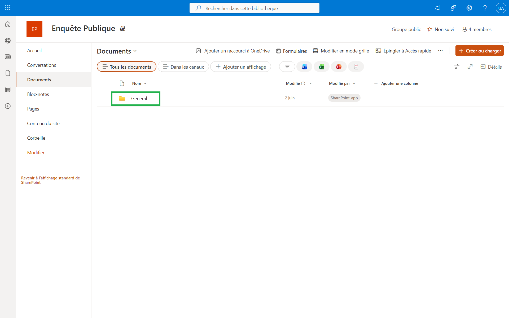
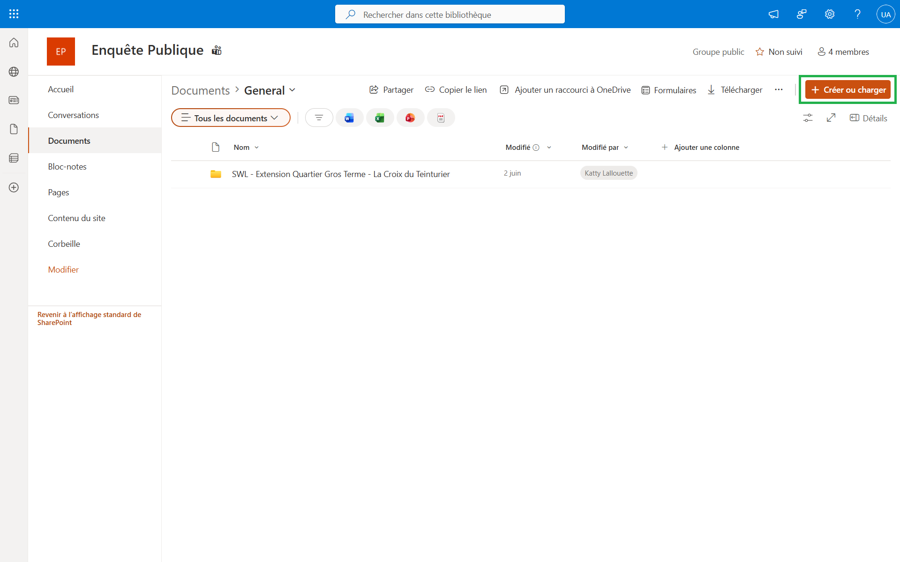
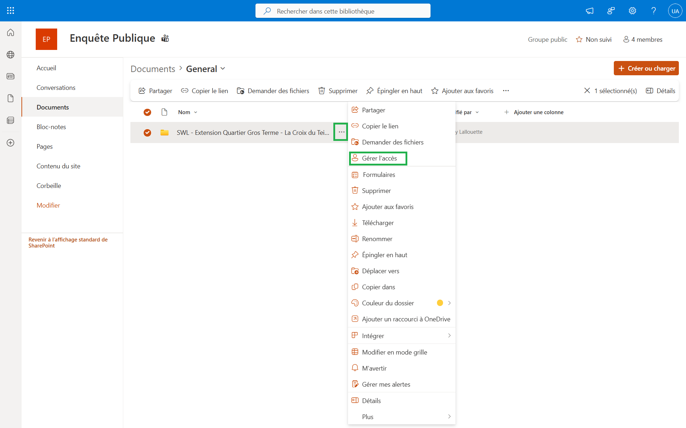
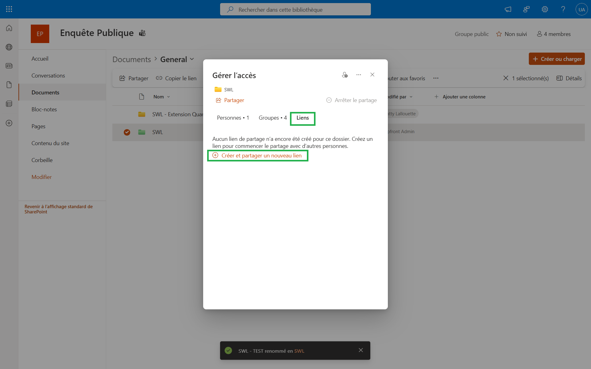
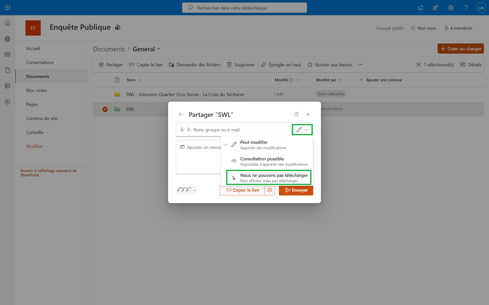
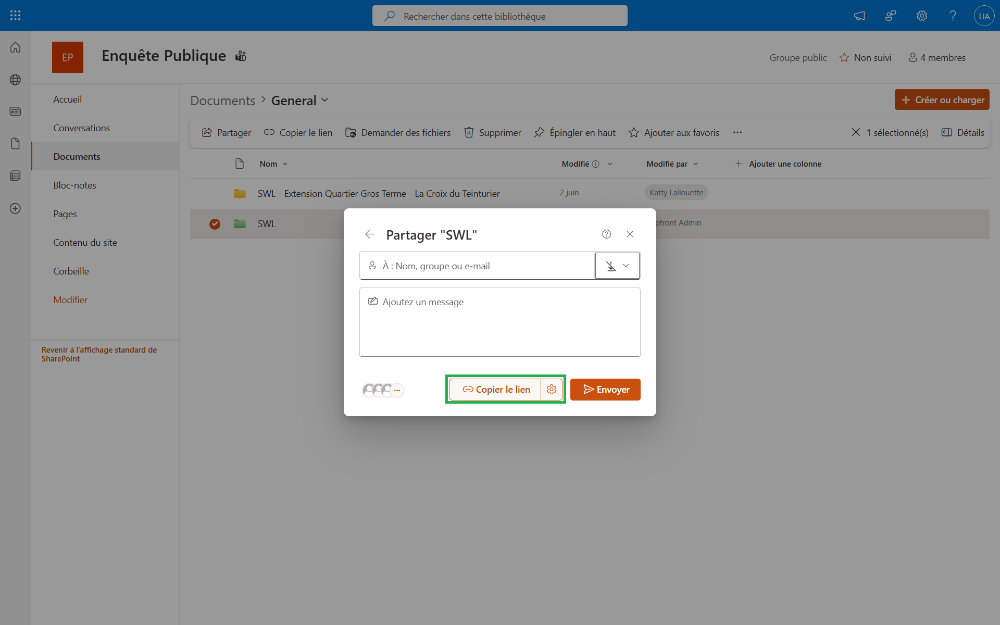
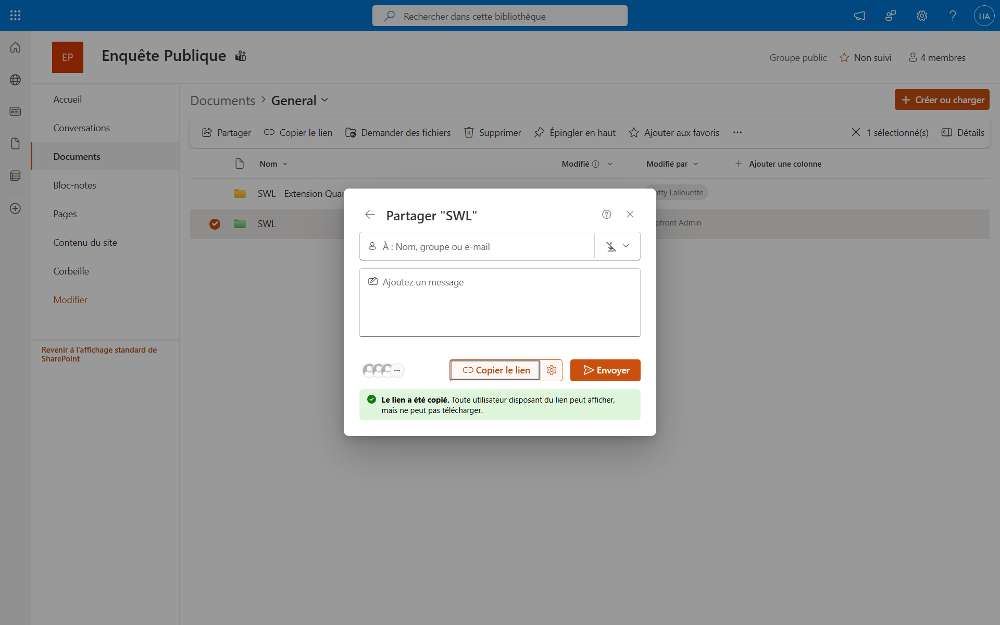
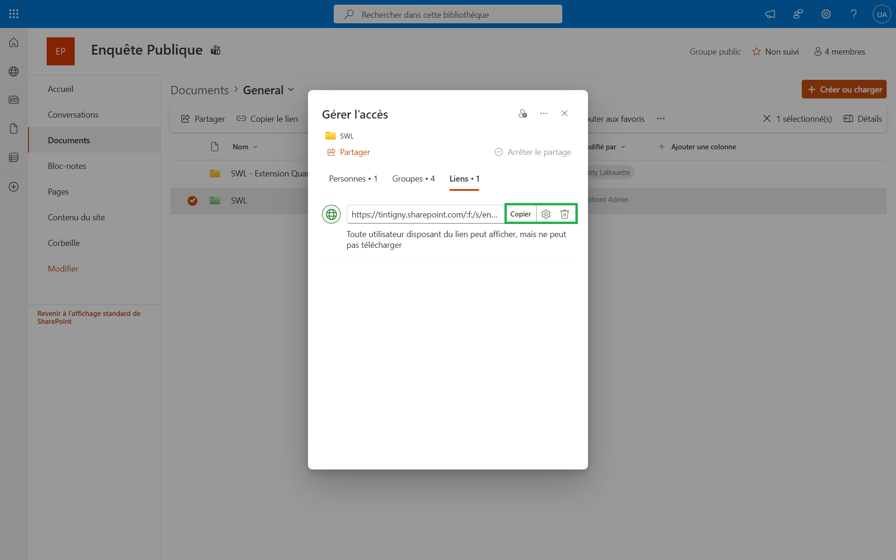

Objectif
Cette procédure permet de publier une enquête publique
dans SharePoint et de générer un lien public permettant
uniquement la consultation des documents.
Résultat attendu :
Les citoyens peuvent consulter les documents
sans pouvoir les télécharger.
Étape 1 - Ouvrir le dossier General
Rendez-vous dans le SharePoint
Enquête Publique
puis ouvrez le dossier
General.

Étape 2 - Charger le dossier de l'enquête
Une fois dans le dossier
General,
cliquez sur
Créer ou charger
puis importez le dossier contenant
les documents de l'enquête publique.
Le dossier importé contiendra tous les documents
qui seront rendus accessibles au public.

Étape 3 - Ouvrir Gérer l'accès
Sélectionnez le dossier créé,
cliquez sur les trois points
puis choisissez :
Gérer l'accès

Étape 4 - Créer un lien public
Dans l'onglet
Liens,
cliquez sur :
Créer et partager un nouveau lien

Étape 5 - Désactiver le téléchargement
Ouvrez le menu du crayon
puis sélectionnez :
Nous ne pouvons pas télécharger
Cette option permet au public
de consulter les documents
sans pouvoir les télécharger.

Étape 6 - Copier le lien
Cliquez sur le bouton :
Copier le lien

Étape 7 - Vérifier la création du lien
Une notification verte confirme
que le lien a bien été copié.
Le lien public est maintenant prêt à être diffusé.

Étape 8 - Gérer le lien ultérieurement
Le lien reste disponible dans :
Gérer l'accès → Liens
- Copier à nouveau le lien
- Supprimer le lien
- Ajouter une date de péremption
- Modifier les paramètres via l'icône engrenage

Résultat obtenu
Publication terminée.
Les citoyens peuvent consulter
les documents de l'enquête publique
sans pouvoir les télécharger.